Every analysis starts here. Block 2 reads your file, shows you how it was interpreted so that you can confirm it, checks the quality of the matrix before computing a single statistic and tells you which analyses your data support. If you are not sure how to arrange your information, it prepares a template for you; if a file will not upload, you can paste the data into its built-in sheet.
Statistical programs compute whatever they are given, even if it is wrong. An allele typed as 18O (with the letter O) counts as a new allele and inflates diversity; a plant entered twice looks like a clone; a row without a population is left out of every group; a latitude of 190° moves a population to the other side of the planet. None of these errors stops the calculation, but all of them change the results. That is why Block 2 follows one rule: nothing is assumed silently. Every decision the app makes is shown, explained and can be corrected before you continue.
There are four ways to get data into the program: drag in a file, paste the data into the built-in sheet, fill in a template made by the app or load one of the examples. All of them end in the same checks.
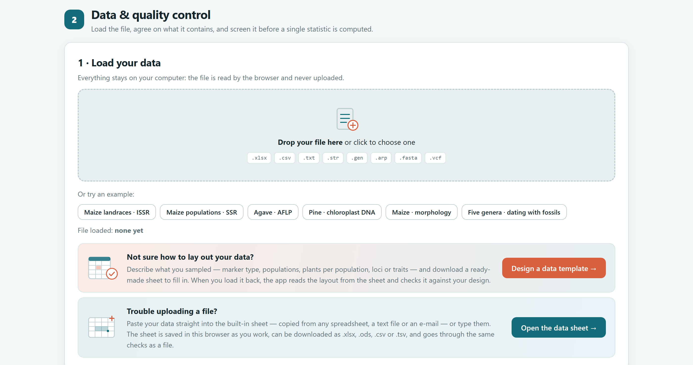
1 2 3 4 5| Format | What it contains | What the app does | Pop. · coord. |
|---|---|---|---|
Spreadsheet.xlsx .xls .xlsm | One table per sheet; any data type. | If the workbook has several sheets, the Sheet selector appears. The data then go through the interpretation and the role of each column. | ● ● |
Delimited text.csv .txt .tsv | The same table, separated by commas, semicolons or tabs. | Detects the separator and follows the same path as a spreadsheet. | ● ● |
Genotype file for Bayesian clustering.str .stru | One or two rows per individual, with the ID, the population and one allele per column; −9 = missing. | Detects whether there are one or two rows per individual and reads the locus names from the first row. | ● — |
Population file.gen | Title, locus names and blocks separated by the word POP; genotypes such as 182186. | Each POP block becomes a population. | ● — |
Project file.arp | [Profile] and SampleData sections per population. | Reads each sample with its population name. | ● — |
Aligned sequences.fasta .fas .fa | A >name line followed by the sequence. | Groups identical sequences into haplotypes. If the header is >ID | Population | Region, it also reads the population and the region. | ◐ — |
Variants.vcf | SNPs with the genotypes of each sample. | Takes the first alternative allele at each site. | — — |
FASTA, VCF, .str, .gen and .arp files go straight to quality control. Because they rarely include regions or coordinates (and VCF files do not even include populations), the Add sample information card appears. There you load a sheet with an ID column, holding the same names as the file, and any of Population, Region, Latitude and Longitude. The Download an empty sample sheet with these IDs button gives you that sheet with the IDs already filled in (figure 3.20).
A table is read without trouble if it follows one simple rule: one row per individual and one column per variable, with the column names in the first row. Figure 3.3 shows the four layouts the app recognises.
| Type | How each cell is written | Missing values and common errors |
|---|---|---|
| Codominant | The fragment size in base pairs (182) or the number of repeats. A homozygote repeats the allele: 182 | 182. SNPs are written as nucleotides: A | G. | 0 or an empty cell. If only one allele amplified, leave both cells empty: partial genotypes are discarded. |
| Dominant | 1 if the band is present and 0 if it is absent. It also accepts p/a, present/absent, +/− and yes/no. | Empty, ?, −9 or −1. Any other value (2, “x1”) is flagged as an error. |
| Haploid | One code per locus: the size of a chloroplast microsatellite or the name of the haplotype (H1, H2). | Empty, or the code you declare as missing. A cell containing “182/186” is flagged, because a haploid does not have two alleles. |
| Sequences | In FASTA, or one column per gene region with the complete sequence. IUPAC letters (A C G T N R Y S W K M B D H V); gaps as −. | ? or N. U is converted to T. Sequences of different lengths are flagged as unaligned. |
| Morphological | Numbers. The decimal comma is accepted (13,5). Class characters (colour) can be entered as text. | Empty or NA. Text in a numeric column becomes missing and is flagged. |
An empty cell, NA, n/a, NaN, ?, ., .., x, null, missing, −9, −99 and −999. In addition, whatever code you enter under Code used for missing data (by default, 0 for codominant markers).
ID: ID, Ind, Individual, Sample, Plant, Tree, Accession, Genotype, Name, Clave, Individuo, Muestra, Planta. Population: Pop, Population, Población, Site, Locality, Race, Raza, Landrace, Sitio, Localidad, Procedencia. Region: Region, Zone, Group, State, Estado, Area, Province, Country, País. Coordinates: Lat, Latitude, Latitud, Northing; Lon, Long, Longitude, Longitud, Easting. The whole name counts, with a plural or a unit in brackets: Longitud_mazorca is a trait.
If a file will not upload, if you were sent the data in the body of an email or if you prefer to enter them directly, open the data sheet with Open the data sheet. It works like a simple spreadsheet: you paste or type, correct and, when it is ready, send it for analysis.
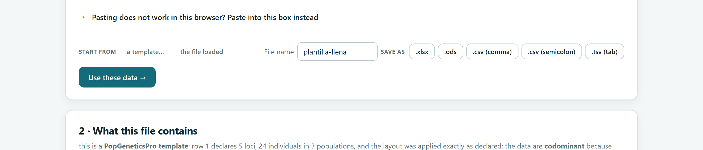
| Keys | Action |
|---|---|
| Ctrl+V / C / X | Paste, copy, cut |
| Ctrl+Z / Y | Undo, redo |
| Ctrl+A | Select the used range |
| Arrows · Tab · Enter | Move (with Shift, move back or extend the selection) |
| Home · End · PgUp · PgDn | Jump to the edges |
| F2 or double-click | Edit the cell |
| Delete | Clear the selection |
| Esc | Cancel editing |
| Button | Use it when… |
|---|---|
| .xlsx | you want to keep working in a spreadsheet. |
| .ods | you use an open-format office suite. |
| .csv (comma) | you need plain text with a decimal point. |
| .csv (semicolon) | your computer uses a decimal comma, as is common in many countries. |
| .tsv (tab) | you are going to paste the data into another program. |
| Control | What it does |
|---|---|
| Undo · Redo | Undoes or redoes the last change, even a whole paste. |
| Rows: + above · + below · − delete · +100 | Inserts rows above or below the selection, deletes the selected rows or adds 100 empty rows at the end. |
| Columns: + left · + right · − delete · width | The same for columns; the slider sets their display width. |
| First row = column names | Untick it if your data start without a row of names. |
| Clear the sheet | Empties the sheet (this can be undone). |
| Start from: a template… · the file loaded | Opens the template designer, or copies the file you loaded into the sheet so that you can correct it there. |
| Pasting does not work in this browser? | An alternative text box: paste there and click Put it in the sheet at the selected cell. Useful if the browser blocks the clipboard. |
When you load a file and quality control finds problematic values, the Correct them in the data sheet button opens your data in the sheet with those cells marked in red. Hovering the mouse over a marked cell shows the reason. You correct them, click Use these data and the checks are run again (section 3.5).
The best way to avoid formatting errors is not to invent the format. With Design a data template you describe what you sampled and the app writes the sheet for you: IDs and populations already in place, one column per locus or trait and a first row that declares the layout, so that there is nothing to guess when you load it.
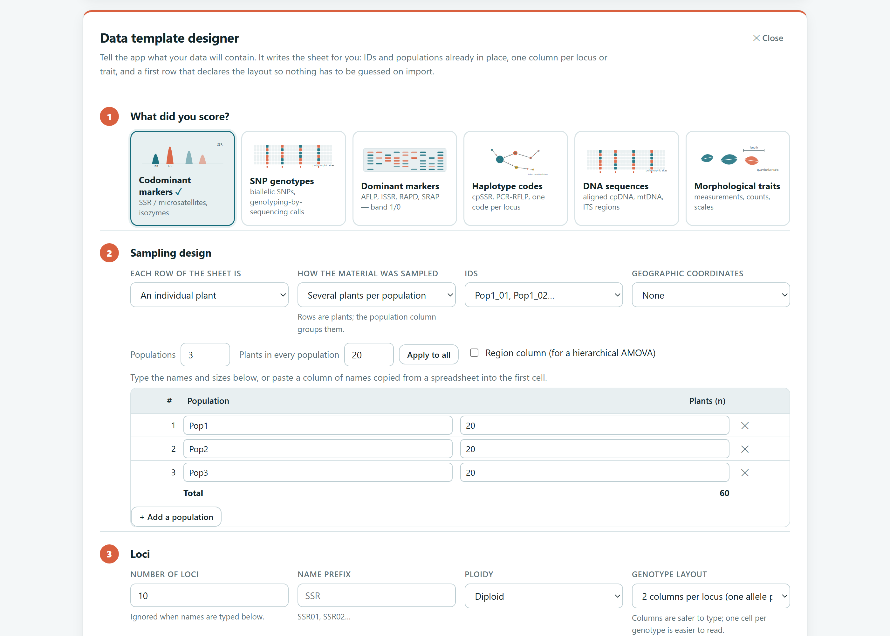
| Card | For | What step 3 asks for |
|---|---|---|
| Codominant markers | Microsatellites, isozymes | Number of loci or their names, prefix, ploidy, genotype layout (two columns or one cell) and missing-data code. |
| SNP genotypes | Biallelic SNPs, genotyping by sequencing | The same; alleles are written as nucleotides. |
| Dominant markers | AFLP, ISSR, RAPD, SRAP | Bands per primer (one name per primer and how many bands you scored) and whether the sheet has individuals or bands in rows. |
| Haplotype codes | Chloroplast microsatellites, PCR-RFLP | Loci with one code per cell. |
| DNA sequences | Aligned cpDNA, mtDNA, ITS | Gene regions and their aligned length; it proposes a FASTA skeleton with a sample sheet. |
| Morphological traits | Measurements, counts, scales | Name, unit and type of each trait (quantitative, discrete or ordinal). |
| Option | Meaning |
|---|---|
| Each row of the sheet is | What each row is: a plant, a landrace, an accession, a variety, a clone, a genotype, a sample, a bulked population or an OTU. The chosen name is used in every table and text. |
| How the material was sampled | Several plants per population, or one bulked sample per unit (bulk). With bulked samples there are no within-population analyses. |
| IDs | Pop1_01, Pop1_02… · 001, 002… · left empty for you to type in. |
| Geographic coordinates | None, one point per population or one point per plant. With one point per plant and at least 10 plants, fine-scale spatial structure becomes available (Block 9). |
| Region column · Group column | Add a column for a hierarchical AMOVA or for a group such as the racial complex. |
| Table of populations | Name and number of plants of each population. You can paste a column of names copied from a spreadsheet into the first cell; Apply to all gives them all the same size. |
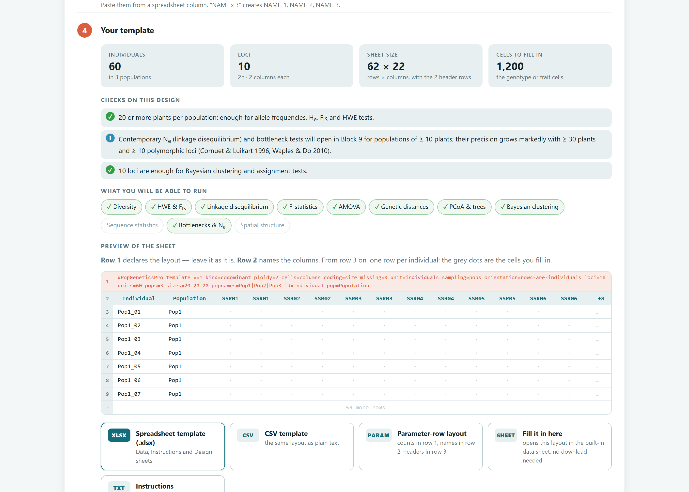
| Button | File | When to use it |
|---|---|---|
| XLSX | Spreadsheet with three sheets: data, instructions and design. | The recommended option for filling in on a computer. |
| CSV | The same template as text. | For programs that cannot read .xlsx. |
| PARAM | Layout with a parameter row: counts in row 1, names in row 2 and headers in row 3 (figure 3.7). | If you will also use programs that read that layout. Only enabled for designs that fit it. |
| SHEET | Opens the template in the built-in data sheet. | For entering data directly, without downloading anything. |
| FASTA | Skeleton with one header per sequence. | With sequences: paste each sequence below its name. |
| TXT | Filling-in instructions and design checks. | To share with whoever enters the data in the laboratory. |
The first row of a template starts with #PopGeneticsPro template and holds, cell by cell, key=value pairs. When the sheet is loaded, the app reads it and applies the layout exactly as declared, without guessing. Do not delete or modify it.
| Key | Meaning | Key | Meaning |
|---|---|---|---|
kind | data type | loci | number of loci, bands or traits |
ploidy | ploidy | units | number of data rows |
cells | one allele per column or genotype in one cell | pops | number of populations |
coding | sizes, nucleotides, 0/1 or values | sizes | plants per population (8|8|8) |
missing | missing-data code | popnames | population names |
unit · sampling · orientation | what each row is, how it was sampled and whether the rows are individuals or bands | id · pop · region | names of the label columns |
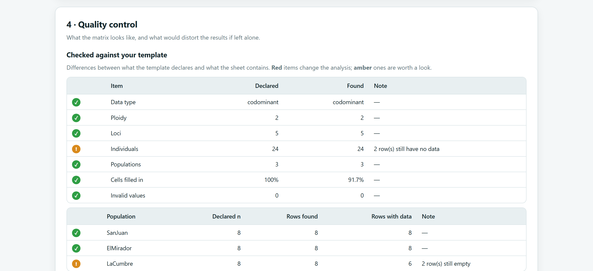
| If the design has… | the designer warns that… |
|---|---|
| Fewer than 5 plants in a population | this is not enough for any within-population test; 20 to 30 are needed to estimate frequencies well (Hale et al., 2012). |
| 20 or more plants per population | this is enough for allele frequencies, He, FIS and Hardy–Weinberg tests. |
| Fewer than 5 polymorphic loci | multilocus analyses (Bayesian clustering, assignment, r̄d) are not reliable; clustering is usually run with 10 or more. |
| Few populations per region | the number of possible permutations limits the smallest P value of ΦCT in the AMOVA (Fitzpatrick, 2009). With 2 + 2 populations there are only 3 distinct arrangements and P never falls below 0.33. |
| 10 or more plants per population (codominant) | Ne from linkage disequilibrium and the bottleneck tests of Block 9 become available; their precision improves greatly with 30 or more plants and 10 or more polymorphic loci. |
At the end of Block 2, the Export in another layout button opens the designer with your data already loaded. This lets you save, for example, a .str or .gen file as a PopGeneticsPro template with its populations, in the layout with a parameter row, or an alignment as FASTA with its sample sheet.
A plain table does not say what it is. Before computing, the app works out three things: whether the rows are individuals or loci, what type of marker the table contains and what role each column plays. It shows them to you on two cards so that you can confirm them.
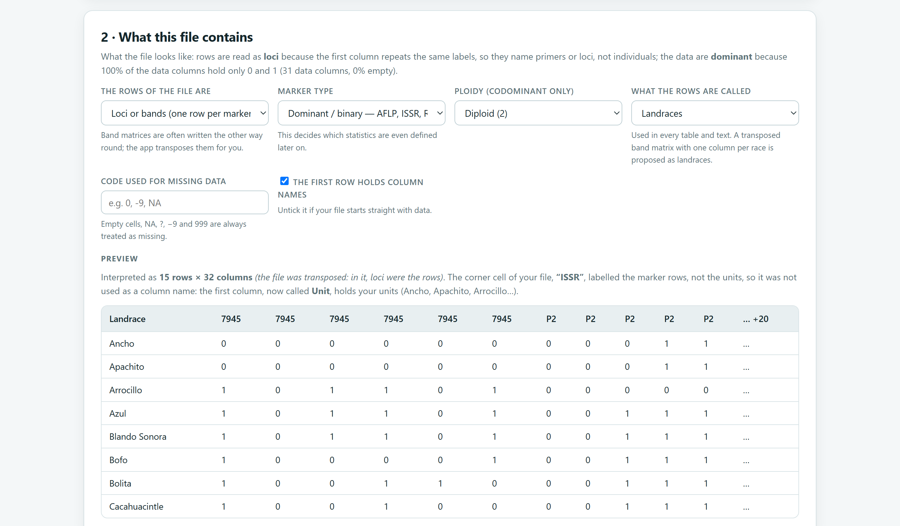
1 2 3 4 5 6| Option | What it decides | When to change it |
|---|---|---|
| The rows of the file are | Individuals (one row per plant) or loci and bands (one row per marker). | If the app transposed a table it should not have, or the other way round. |
| Marker type | Codominant, dominant, haploid, sequences or morphological. | Whenever what was read does not match your marker. |
| Ploidy | Diploid, haploid, triploid, tetraploid or hexaploid (codominant markers only). | In polyploid species, with one column per gene copy. |
| How genotypes are written | One allele per column or the whole genotype in one cell. | If your cells read 182/186. |
| What the rows are called | Individuals, landraces, accessions, varieties, populations, clones, genotypes, samples or OTUs. | So that tables, texts and the report use your term. |
| Code used for missing data | A missing-data code of your own. | If your laboratory uses, for example, 999. |
| The first row holds column names | Whether the first row contains names. | Untick it if the file starts directly with data. |
| # | If it finds… | then the data are… |
|---|---|---|
| 1 | row 1 of a PopGeneticsPro template | the type declared in it |
| 2 | a parameter row with two columns per locus | codominant (with one column per locus: dominant or haploid) |
| 3 | more than 90% of the data columns containing only 0 and 1 | dominant |
| 4 | columns with complete DNA sequences | sequences |
| 5 | columns with genotypes in one cell (182/186, A/G) | codominant, genotype in one cell |
| 6 | column names that come in pairs | codominant, one allele per column |
| 7 | most columns with continuous measurements | morphological |
| 8 | most columns with a text code | haploid |
| 9 | none of the above | codominant (check it) |
Only the data columns are examined: a latitude or ID column does not turn a matrix of 0s and 1s into measurements. The orientation is worked out first: a matrix of 0s and 1s whose first column repeats names, or with many more rows than columns, is read with the bands in rows.
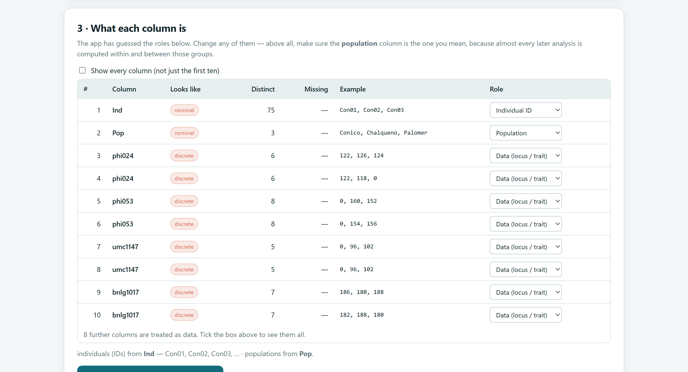
1 2 3 4| Role | Meaning |
|---|---|
| Data (locus / trait) | A data column: allele, band, sequence or trait. This is the default role. |
| Individual ID | The name of each row. If there is none, the app generates Ind1, Ind2… |
| Population | The group of each row. Without this column, each row is treated as a unit of its own. |
| Region / group | The upper level for a hierarchical AMOVA or for colouring figures. |
| Latitude · Longitude | Coordinates in decimal degrees (19.62, −98.12) or projected in metres, such as UTM (Northing, Easting). |
| Ignore this column | A column that should not be used: remarks, dates, gel number. |
Almost all later analyses are computed within and among the groups defined by the Population column. If the app took the wrong column as the population (for example, the plate number) or found none, correct it here before clicking Build the dataset and run the checks. A mistake at this step invalidates diversity by population, FST, the AMOVA and everything that follows.
When you click Build the dataset and run the checks, the app assembles the dataset and checks it. The 4 · Quality control card first shows six figures, then the warnings and, below them, tables and figures of the matrix.
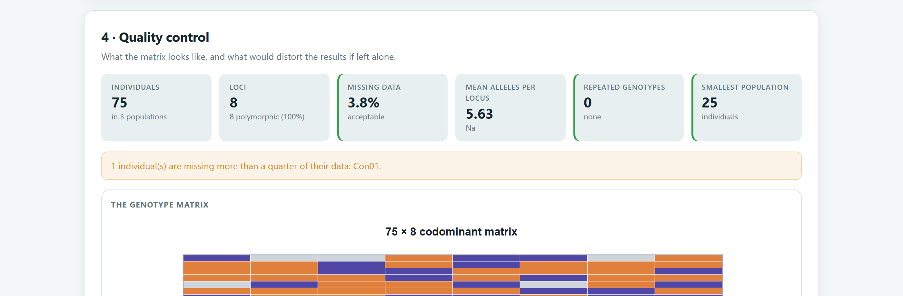
| Card | What it measures | Warning sign |
|---|---|---|
| Individuals (or the name of your units) | Rows read and number of populations. | Fewer rows than you entered: check the table of problems. |
| Loci · Bands · Haplotypes · Traits | Data columns and how many of them are polymorphic. | Many monomorphic loci: they provide no information. |
| Missing data | Percentage of data cells that are missing. | More than 10% (amber border). |
| Mean alleles per locus · Mean band frequency | Mean Na (codominant) or mean band frequency (dominant). | A very high Na at a single locus: possible scoring errors. |
| Repeated genotypes | Pairs of individuals with an identical multilocus genotype. | Any value greater than 0: possible clones or duplicated plants. |
| Smallest population | Size of the smallest population. It does not appear if there is no population column. | Fewer than 5 (amber border). |
| Missing data | Reading | What to do |
|---|---|---|
| Less than 5% | Very good | Carry on without changes. |
| 5 to 10% | Acceptable | Carry on, but check whether the missing data are concentrated in one locus or one population. |
| More than 10% | Worrying | Remove the loci or individuals with the most missing data rather than letting the gaps drive the result. |
| An individual with more than 25% | Weak individual | The app names it. Genotype it again, or exclude it if its absence does not leave the population too small. |
| A locus with far more missing data than the rest | Problematic locus | It may have null alleles or amplify poorly. Check it in Block 4 as well. |
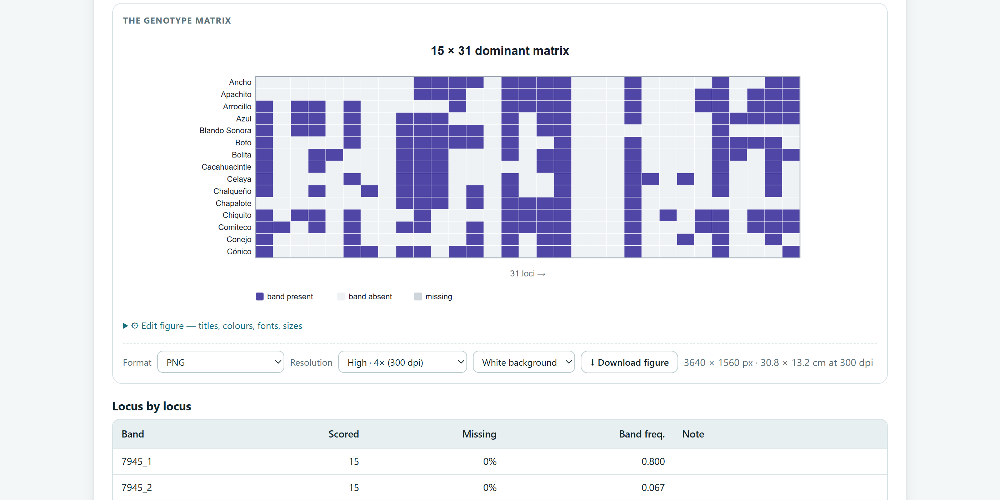
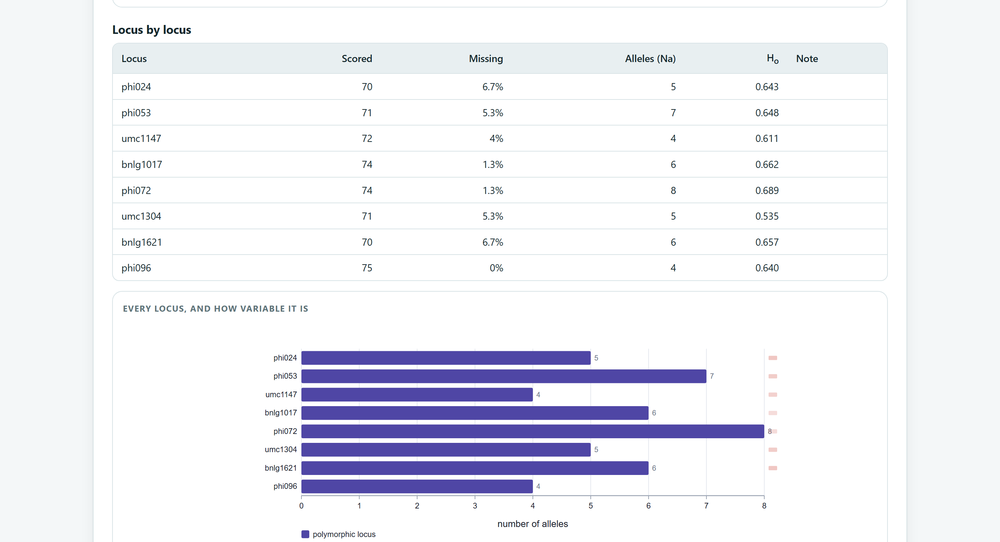
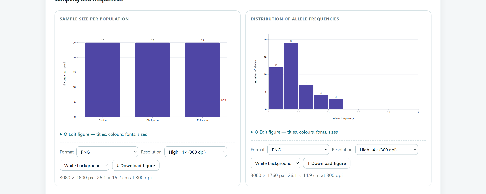
| If a locus or band… | then… |
|---|---|
| Is monomorphic (a single allele, or a band present in all or in none) | It contributes nothing to differentiation or distances. The app keeps it and warns you; it counts towards the percentage of polymorphic loci (%P). |
| Is a dominant band with a frequency below 5% or above 95% | Its frequency is poorly estimated from a gel. It is common practice to remove such bands before analysis; the app counts them in a warning. |
| Has an allele found in a single plant only | It may be real (a rare allele) or a scoring error. Check the electropherogram before reporting it as a private allele. |
Many plants also reproduce vegetatively: through rhizomes, stolons, bulbils or offsets, as agaves do. Each independent stem or plant is a ramet, but all those that arose from the same original individual form a single genet and share the same genotype. If 40 ramets of one genet are sampled as though they were 40 plants, the sample size is inflated, diversity is underestimated and FIS is distorted. The usual practice is to keep one representative per multilocus genotype. The app compares all pairs of individuals genotyped at at least half of the loci and reports those that are identical and those that match at 95% or more of their loci.
| If you find… | the most likely explanation is… | what to do |
|---|---|---|
| Identical pairs in a clonal species | ramets of the same genet | keep one per genotype |
| Identical pairs in a species without vegetative reproduction | the same plant sampled or entered twice, or too few loci | check the labels and the field sheet |
| Pairs that match at 95% or more without being identical | close relatives, or the same plant with a scoring error | check the loci that differ |
| Many identical pairs with few loci | a lack of power to tell individuals apart | add loci before concluding that there is clonality |
With sequences, sharing a haplotype is normal, and with traits there is no multilocus genotype: in both cases this check does not apply.
To see how quality control reacts, table 3.13 reproduces a small matrix of 20 plants and 4 microsatellites with six deliberately planted errors. You can enter it in the data sheet and follow the steps.
| Row | ID | Population | Latitude | Longitude | SSR1 | SSR1 | SSR2 | SSR2 | SSR3 | SSR3 | SSR4 | SSR4 |
|---|---|---|---|---|---|---|---|---|---|---|---|---|
| 3 | A02 | Tlaxco | 19.62 | −98.12 | 182 | 184 | 138 | 142 | 96 | 96 | 210 | 210 |
| 4 | A03 | Tlaxco | 19.62 | −98.12 | 182 | 184 | 138 | 142 | 96 | 96 | 210 | 210 |
| 6 | A05 | Tlaxco | 19.62 | −98.12 | 184 | 186 | 142 | 144 | 96 | 100 | 210 | 216 |
| 7 | A05 | Tlaxco | 19.62 | −98.12 | 182 | 182 | 138 | 140 | 100 | 102 | 212 | 214 |
| 8 | A07 | Tlaxco | 19.62 | −98.12 | 18O | 186 | 140 | 142 | 96 | 98 | 210 | 212 |
| 9 | A08 | Tlaxco | 19.62 | −98.12 | 184 | 184 | 142 | 142 | 98 | 98 | 0 | 214 |
| 11 | A10 | (empty) | 19.62 | −98.12 | 186 | 188 | 140 | 144 | 98 | 100 | 210 | 214 |
| 12 | B01 | Apizaco | 190.41 | −98.14 | 182 | 184 | 144 | 146 | 100 | 102 | 216 | 218 |
| 20 | B09 | Apizaco | 19.41 | −98.14 | · | · | · | · | · | · | · | · |
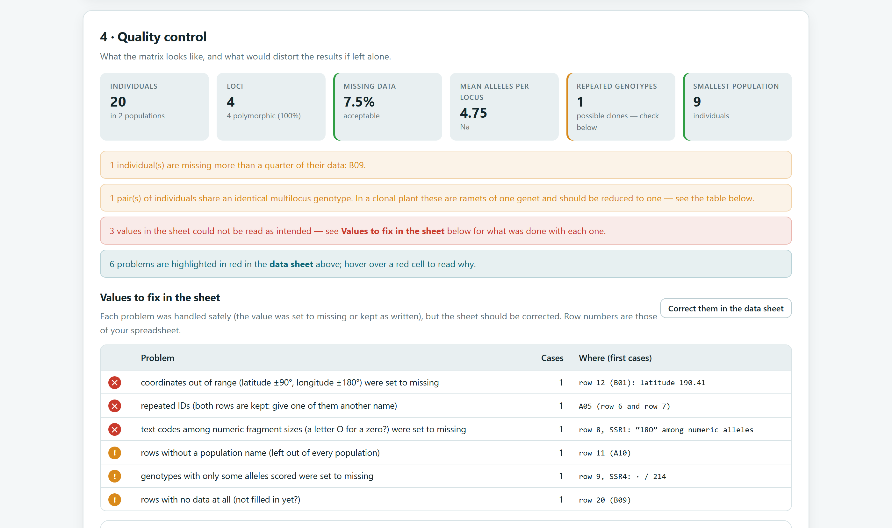
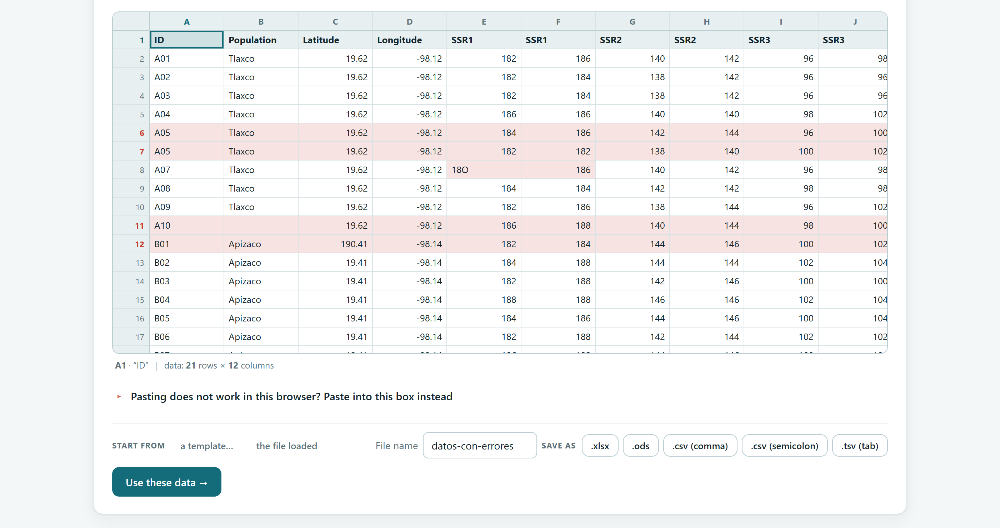
18O cell (with the letter O) and its partner in row 8, and the whole of rows 6 and 7 (repeated ID), 11 (no population) and 12 (impossible latitude). Hovering the mouse over a red cell shows the reason.| Planted error | How the app reports it | What it did and how to correct it |
|---|---|---|
18O (with the letter O) in row 8 | ✕ text codes among numeric fragment sizes (a letter O for a zero?) were set to missing | It removed the genotype so as not to inflate Na with a false allele. Type 180. |
| A05 twice (rows 6 and 7) | ✕ repeated IDs (both rows are kept: give one of them another name) | It kept both rows. Rename the second one A06. |
| Latitude 190.41 (row 12) | ✕ coordinates out of range … were set to missing | It deleted the latitude so as not to distort the distances. Type 19.41. |
| Empty population (row 11) | ! rows without a population name (left out of every population) | A10 is left out of every group. Type Tlaxco. |
| 0 | 214 at SSR4 (row 9) | ! genotypes with only some alleles scored were set to missing | A partial genotype is not a homozygote. Score it again or leave both alleles empty. |
| B09 with no data (row 20) | ! rows with no data at all (not filled in yet?) and a warning of more than 25% missing data | Genotype the plant or delete the row. |
| A02 and A03 identical | Repeated genotypes = 1 and the table of repeated genotypes | A clone, or a plant entered twice? Check the field labels. |
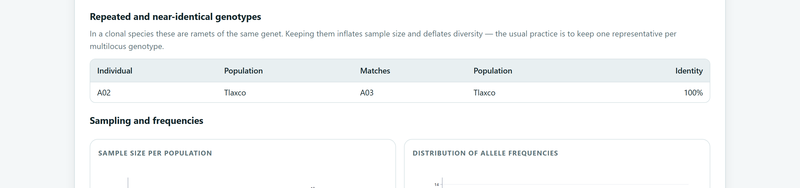
| Problem | What the app does with the value | |
|---|---|---|
| ✕ | Band that is neither 0 nor 1 | Sets it to missing. |
| ✕ | Genotype with a number of alleles different from the ploidy | Sets it to missing. |
| ✕ | Whole genotype (182/186) in a one-allele-per-column layout | Sets it to missing; if the whole sheet is written that way, choose “whole genotype in one cell”. |
| ✕ | Number of genotype columns that does not match the ploidy | Ignores the extra columns at the end. |
| ✕ | Non-numeric allele in a size template · text code among sizes | Sets it to missing. |
| ✕ | Repeated ID | Keeps both rows. |
| ✕ | Coordinate out of range (±90°, ±180°) among coordinates in degrees | Sets it to missing. |
| ✕ | Letters that are not IUPAC nucleotides · no data columns | Flags it for correction. |
| ! | Genotype with only some alleles scored | Sets it to missing. |
| ! | Haploid cell that appears to have two alleles | Keeps it and flags it. |
| ! | Row or locus with no data at all | Keeps it; this is usually an unfinished template. |
| ! | Row without a population name | Leaves it out of every population. |
| ! | Coordinate that is not a number | Sets it to missing. |
| ! | Sequence shorter than the longest in its region · sequence not entered | Flags it as unaligned · pads it with ? to keep the alignment. |
| ! | Text in a numeric trait column | Sets it to missing. |
Each problem is handled safely so that the calculations are not contaminated, but your original file does not change. Correct the source sheet or save the corrected version from the built-in data sheet. That way, the next time you load the data, or when someone else uses them, they will be clean.
The last card of the block, 5 · What you can run with these data, summarises which families of analyses the dataset supports as it now stands and, for those it does not, explains why.
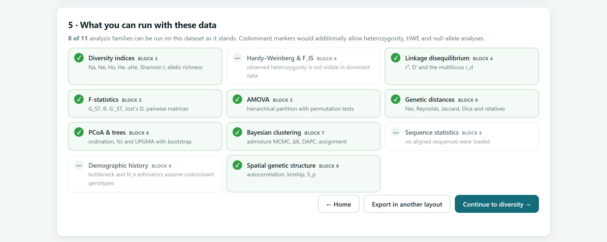
| Family in the app | Block | Requirement |
|---|---|---|
| Diversity indices | 3 | Markers and at least one population with 2 or more individuals. |
| Hardy–Weinberg & F_IS | 4 | Codominant markers and at least one population with more than one individual. |
| Linkage disequilibrium | 4 | Two or more loci (not sequences or traits) and populations with more than one individual. |
| F-statistics · AMOVA | 5 | Markers and at least two populations with 2 or more individuals each. |
| Genetic distances | 6 | Three or more units, with at least one polymorphic locus or traits. |
| PCoA & trees | 6 | Three or more units. |
| Bayesian clustering | 7 | Multilocus markers (not sequences or traits), 6 or more individuals and 5 or more polymorphic loci. |
| Sequence statistics | 8 | Aligned sequences. |
| Demographic history | 9 | Codominant markers, two or more loci and populations with more than one individual. |
| Spatial genetic structure | 9 | Coordinates for 10 or more individuals. |
The card uses the recommended minimums. The buttons in the top bar are somewhat more permissive so that you can explore: Block 7 opens from 3 polymorphic loci, although the card asks for 5, and Block 3 opens even with one sample per unit to show the diversity of the whole dataset. When an analysis falls below the recommended minimum, the corresponding block warns you in its interpretation.
| Button | What it does |
|---|---|
| ← Home | Returns to the home page; the data remain loaded. |
| Export in another layout | Opens the designer with the data so that you can save them as a template, a layout with a parameter row or FASTA with a sample sheet (section 3.3). |
| Continue to diversity → | Moves on to Block 3. |
Each example shows a different situation in Block 2. All of them are loaded from Or try an example and, except for the FASTA files, finished with Build the dataset and run the checks. Table 3.18 summarises what you should obtain.
| Example | Read as | Missing | Warnings | Analyses |
|---|---|---|---|---|
| Maize landraces · ISSR | Dominant, transposed; 15 landraces, 31 bands (25 polymorphic, 80.6%); no population column | 0% | 6 monomorphic bands | 3 of 11 |
| Maize populations · SSR | Codominant, one allele per column; 75 plants, 3 populations of 25, 8 loci; Na = 5.63 | 3.8% | Con01 has no data at 3 of 8 loci | 9 of 11 |
| Agave · AFLP | Dominant; 80 plants, 4 populations of 20, 60 polymorphic bands, with coordinates | 0% | None: matrix ready | 8 of 11 |
| Pine · chloroplast DNA | FASTA; 48 sequences of 480 bp, 4 populations of 12, 8 haplotypes | 0% | Offers to add sample information | 6 of 11 |
| Maize · morphology | Morphological; 75 plants, 3 populations, 9 traits | 0% | None: matrix ready | 2 of 11 |
| Five genera · dating with fossils | FASTA; 16 sequences of 1600 bp, 6 genera as populations, 16 haplotypes | 0% | Offers to add sample information | 6 of 11 |
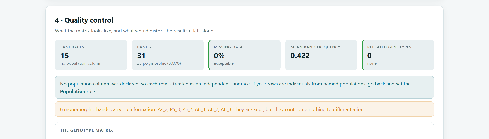
With a single sample per landrace there is no variation within units, so diversity by population, Hardy–Weinberg equilibrium and the AMOVA do not exist. What can be studied are the relationships among landraces: genetic distances, principal coordinates, trees with bootstrap and Bayesian clustering (3 of 11 families). This is the path of Block 6, where this example is taken up again.
Ind, Pop and two columns per locus.Ind is the ID and Pop the population, with 3 distinct values: Cónico, Chalqueño and Palomero.Everything is within the recommended limits: 25 plants per population, less than 5% missing data and no locus with more than 7%. Plant Con01 lacks 3 of its 8 loci (37.5%); with 25 plants in its population, it is best to keep it and let each analysis use the loci it does have. With 9 of 11 families available, this dataset runs through almost the whole manual.
Plant is the ID, Population the population and two columns are latitude and longitude; the summary says coordinates found.Agaves produce offsets, so in a real study the table of repeated genotypes deserves a careful look. In this simulated example there are none. With 60 bands, two ramets of the same genet would show up as an identical pair.
>Sierra_Norte_01 | Sierra_Norte.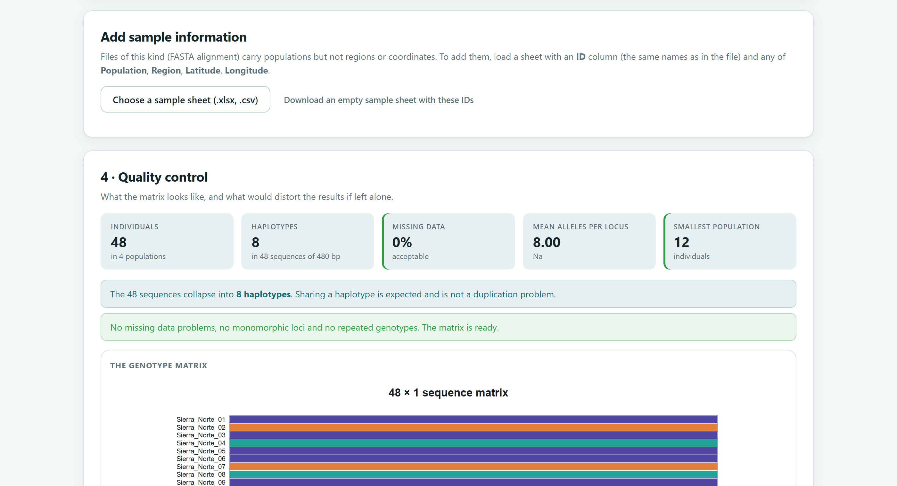
Write the headers as >ID | Population | Region so that you do not need a sample sheet. If you already have the file without populations, click Download an empty sample sheet with these IDs, fill in the columns and load it with Choose a sample sheet; the IDs must match those in the FASTA file (the app ignores case and leading or trailing spaces).
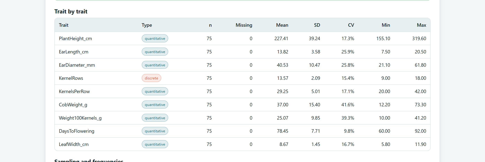
| CV | Variation | In the example |
|---|---|---|
| Less than 10% | Low | Days to flowering, 9.8%: a very stable trait across plants. |
| 10 to 30% | Moderate | Plant height (17.3%), ear length (25.9%) and ear diameter (25.8%). |
| More than 30% | High | Cob weight (41.6%) and 100-kernel weight (39.3%): good candidates for differentiating populations or for selection. |
An indicative guide: the expected CV depends on the trait and the environment. A very high CV may also reveal data-entry errors, such as a weight in grams entered as kilograms; check the minimum and maximum.
In studies among species, the population column serves to group taxa (genera, sections, clades) and to colour the trees. The within-population analyses of Blocks 3 to 5 make no biological sense in that case, even though the app allows them; go straight to Blocks 6 and 8.
With the data clean and confirmed, the next chapter moves on to the first analysis proper: the allele frequencies and diversity indices of Block 3.